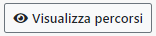

Composizione Partenza
In Composizione Partenza è possibile assegnare una o più partenze sull'intervento.
La schermata è composta dal riassunto dell'intervento, dalla lista delle squadre disponibili, dalla lista dei mezzi disponibili e dal riassunto delle partenze già presenti sull'intervento.

Lista Squadre In automatico il sistema filtra le squadre delle tre competenze che sono state assegnate all'intervento. Questa selezione non è bloccante, se un operatore ha la necessità di selezionare squadre di altre competenze può scegliere se togliere i filtri delle competenze o aggiungere nei filtri le competenze desiderate.
Lista Mezzi L'ordine che viene presentato in automatico segue le seguenti regole:
- Vengono presentati i mezzi delle tre competenze dell'intervento
- L'ordine dei mezzi è per tipologia mezzo opportuno in base all'emergenza, distanza dall'intervento, minuti di percorrenza
Selezionando una squadra e un mezzo si forma automaticamente la partenza corrispondente.
A questo punto si può o aggiungere un'altra partenza premendo sul tasto  oppure premere su
oppure premere su  per confermare la partenza.
per confermare la partenza.
Se si ritiene opportuno far intervenire il soccorso aereo, si dovrà premere il tasto . Da li si potrà selezionare la tipolgia di intervento e inserire una descrizione dello stesso
Qualora ci fosse un Triage sull'intervento, il tasto
permetterà di consultarne il risultato.
E' anche possibile effettuare delle partenze utilizzando dei preaccoppiati. Per accedere alla funzionalità basta premere il tasto
e la schemata che si presenta è la seguente

Premendo il tasto  è possibile visualizzare sulla mappa il percorso di tutti i mezzi che stanno intervenendo sull'intervento.
N.B. Selezionando un mezzo, sulla mappa, viene visualizzato il percorso migliore per la tipolgia di mezzo, fino all'obiettivo.